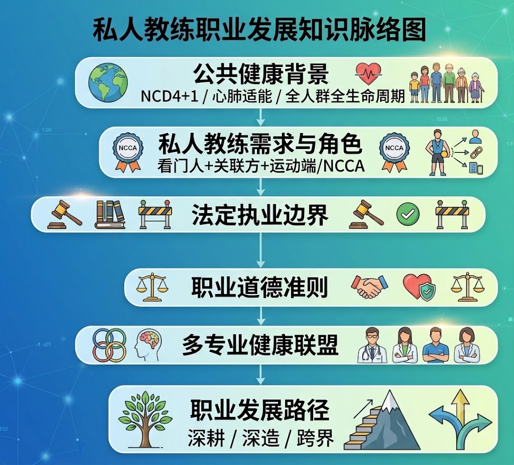

第4章 运动前健康筛查
本章帮助你理解运动前健康筛查的目的、流程和执业边界，并掌握常用筛查工具、附加表格以及药物可能对运动反应产生的影响。
学习时请始终围绕四项信息进行判断：客户是否定期运动、是否存在已知心血管、代谢或肾脏疾病、是否有相关体征或症状，以及计划进行的运动强度。
本章核心知识点（学习目标/必考清单）
| 序号 | 核心知识点 | 重要程度 | 备注 |
|---|---|---|---|
| 1 | 运动的固有健康风险与风险三角 | ⭐⭐⭐ | 选择题/案例分析高频 |
| 2 | ACSM运动前筛查算法（三轴决策） | ⭐⭐⭐⭐⭐ | 核心重点，备考重点 |
| 3 | 运动前健康筛查问卷（图4-1）三步法 | ⭐⭐⭐⭐ | 选择题高频 |
| 4 | ACE ABC沟通法 | ⭐⭐⭐ | 实践应用 |
| 5 | 抗阻训练筛查要求 | ⭐⭐ | 理解即可 |
| 6 | PAR-Q+三色判定 | ⭐⭐⭐⭐ | 选择题高频 |
| 7 | AACVPR风险分层（临床环境） | ⭐⭐ | 了解差异 |
| 8 | 附加表格体系 | ⭐⭐ | 了解流程 |
| 9 | 药物对心率的影响（β-阻滞剂、利尿剂等） | ⭐⭐⭐⭐ | 高频考点 |
序号
核心知识点
重要程度
备注
1
运动的固有健康风险与风险三角
⭐⭐⭐
选择题/案例分析高频
2
ACSM运动前筛查算法（三轴决策）
⭐⭐⭐⭐⭐
核心重点，备考重点
3
运动前健康筛查问卷（图4-1）三步法
⭐⭐⭐⭐
选择题高频
4
ACE ABC沟通法
⭐⭐⭐
实践应用
5
抗阻训练筛查要求
⭐⭐
理解即可
6
PAR-Q+三色判定
⭐⭐⭐⭐
选择题高频
7
AACVPR风险分层（临床环境）
⭐⭐
了解差异
8
附加表格体系
⭐⭐
了解流程
9
药物对心率的影响（β-阻滞剂、利尿剂等）
⭐⭐⭐⭐
高频考点
一、本章核心
运动前健康筛查的核心目的：识别谁需要先看医生，确保在安全的前提下帮助更多人开始并维持运动。
二、核心板块速览表
| 模块 | 内容 | 核心逻辑 | 记住一句话 |
|---|---|---|---|
| 模块1 | 运动的固有健康风险 | 风险来自"不习惯+已患病+接近极限"组合 | 运动整体有益，但需筛查 |
| 模块2 | ACSM筛查算法 | 三轴决策：运动×疾病×症状 | 相关体征或症状会触发医学许可流程 （定期+有疾病无症状+中强度：可考虑免除） |
| 模块3 | 参前问卷 | 三步走：症状→活动→疾病 | 第一步阳性直接停 |
| 模块4 | ACE ABC沟通法 | 问需求→解障碍→一起干 | 医学许可不是拒绝 |
| 模块5 | 抗阻训练筛查 | 证据不足，风险较低 | 通用筛查仍要做 |
| 模块6 | PAR-Q+ | 三色判定：绿/红/黄 | 减少不必要障碍 |
| 模块7 | 临床环境筛查 | 比通用更深 | 心脏康复用AACVPR |
| 模块8 | 附加表格 | 四表一审核 | 法律文件需律师审核 |
| 模块9 | 药物对心率影响 | β阻心低换RPE/利尿脱水多补水 | 降压药防体位低 |
模块
内容
核心逻辑
记住一句话
模块1
运动的固有健康风险
风险来自"不习惯+已患病+接近极限"组合
运动整体有益，但需筛查
模块2
ACSM筛查算法
三轴决策：运动×疾病×症状
相关体征或症状会触发医学许可流程 （定期+有疾病无症状+中强度：可考虑免除）
模块3
参前问卷
三步走：症状→活动→疾病
第一步阳性直接停
模块4
ACE ABC沟通法
问需求→解障碍→一起干
医学许可不是拒绝
模块5
抗阻训练筛查
证据不足，风险较低
通用筛查仍要做
模块6
PAR-Q+
三色判定：绿/红/黄
减少不必要障碍
模块7
临床环境筛查
比通用更深
心脏康复用AACVPR
模块8
附加表格
四表一审核
法律文件需律师审核
模块9
药物对心率影响
β阻心低换RPE/利尿脱水多补水
降压药防体位低
三、关键数字表
| 数字/阈值 | 含义 | 考试提示 |
|---|---|---|
| 3个月 | 「定期运动」定义的时间窗口 | 必须是过去3个月内的活动记录 |
| 每周≥3天 | 「定期运动」的频率要求 | 少于3天=不定期运动 |
| 每次≥30分钟 | 「定期运动」的时长要求 | 单次至少30分钟 |
| 中等强度 | 「定期运动」的强度要求 | 40-59% HRR / RPE 12-13 |
| ≥60% HRR | 高强度阈值 | 高强度=需要更多许可 |
| 每周150分钟 | 健康活动目标（PAR-Q+绿色建议） | 目标值，非起始要求 |
| 发烧（体温升高） | 发烧阈值（PAR-Q+黄色判定） | 暂时性健康问题需延迟增加活动 |
数字/阈值
含义
考试提示
3个月
「定期运动」定义的时间窗口
必须是过去3个月内的活动记录
每周≥3天
「定期运动」的频率要求
少于3天=不定期运动
每次≥30分钟
「定期运动」的时长要求
单次至少30分钟
中等强度
「定期运动」的强度要求
40-59% HRR / RPE 12-13
≥60% HRR
高强度阈值
高强度=需要更多许可
每周150分钟
健康活动目标（PAR-Q+绿色建议）
目标值，非起始要求
发烧（体温升高）
发烧阈值（PAR-Q+黄色判定）
暂时性健康问题需延迟增加活动
四、名词缩写表
| 缩写 | 全称 | 中文含义 |
|---|---|---|
| ACSM | American College of Sports Medicine | 美国运动医学会 |
| CVD | Cardiovascular Disease | 心血管疾病 |
| AMI | Acute Myocardial Infarction | 急性心肌梗死 |
| SCD | Sudden Cardiac Death | 心源性猝死 |
| HRR | Heart Rate Reserve | 心率储备 |
| VO₂R | Oxygen Uptake Reserve | 摄氧量储备 |
| RPE | Rating of Perceived Exertion | 自感用力度 |
| MET | Metabolic Equivalent of Task | 代谢当量 |
| PAR-Q+ | Physical Activity Readiness Questionnaire-Plus | 身体活动准备程度问卷（增强版） |
| AACVPR | American Association of Cardiovascular and Pulmonary Rehabilitation | 美国心血管和肺康复协会 |
| β-阻滞剂 | Beta-blocker | β-肾上腺素能受体阻滞剂 |
| ARB | Angiotensin Receptor Blocker | 血管紧张素受体拮抗剂 |
| CCB | Calcium Channel Blocker | 钙通道阻滞剂 |
| ACE抑制剂 | ACE Inhibitor | 血管紧张素转换酶抑制剂 |
| NSAID | Nonsteroidal Anti-Inflammatory Drug | 非甾体抗炎药 |
| COPD | Chronic Obstructive Pulmonary Disease | 慢性阻塞性肺疾病 |
缩写
全称
中文含义
ACSM
American College of Sports Medicine
美国运动医学会
CVD
Cardiovascular Disease
心血管疾病
AMI
Acute Myocardial Infarction
急性心肌梗死
SCD
Sudden Cardiac Death
心源性猝死
HRR
Heart Rate Reserve
心率储备
VO₂R
Oxygen Uptake Reserve
摄氧量储备
RPE
Rating of Perceived Exertion
自感用力度
MET
Metabolic Equivalent of Task
代谢当量
PAR-Q+
Physical Activity Readiness Questionnaire-Plus
身体活动准备程度问卷（增强版）
AACVPR
American Association of Cardiovascular and Pulmonary Rehabilitation
美国心血管和肺康复协会
β-阻滞剂
Beta-blocker
β-肾上腺素能受体阻滞剂
ARB
Angiotensin Receptor Blocker
血管紧张素受体拮抗剂
CCB
Calcium Channel Blocker
钙通道阻滞剂
ACE抑制剂
ACE Inhibitor
血管紧张素转换酶抑制剂
NSAID
Nonsteroidal Anti-Inflammatory Drug
非甾体抗炎药
COPD
Chronic Obstructive Pulmonary Disease
慢性阻塞性肺疾病
思考题（预习时思考，听课后验证）：
有位客户说自己"完全健康"，但问卷里勾了"偶尔头晕"。他坚持说自己只是睡眠不足。作为教练，你应该怎么处理？医学许可和"不信任客户"有什么区别？
选择题（预习时尝试作答）：
关于"定期运动"的定义，以下哪项是正确的？
- A. 过去1个月每周跑2次，每次20分钟
- B. 过去3个月每周游泳3次，每次45分钟
- C. 每天走路上班，加起来超过30分钟
- D. 每周打1次羽毛球，每次2小时
参考答案见正文模块2
核心知识
● 规律运动降低心血管疾病(CVD)、肺部疾病、代谢性疾病、某些癌症、焦虑抑郁和过早死亡风险
● 但运动存在固有风险：对健康个体，中等强度运动不会引发心血管或肌肉骨骼危险事件
● 风险升高的三类人群：①运动习惯不佳 ②已患病个体（已诊断CVD/代谢/肾脏疾病）③计划进行接近极限强度运动的个体
● 有潜在CVD的个体进行不习惯的剧烈身体活动时，运动相关的急性心肌梗死(AMI)和心源性猝死(SCD)风险最高
● 无症状个体即使高强度运动，心血管不良事件风险仍极低
不习惯运动、已患相关疾病与突然进行接近极限的活动同时出现时，急性心血管事件的风险最值得警惕。这个“风险三角”用于帮助理解风险来源，不代替正式筛查。
火灾风险会随燃料、氧气和点火源的组合而改变。同样，运动风险也取决于客户状态与运动暴露的组合，不能只根据某一项信息作出结论。
● • • 补充理解：风险最高的场景 = 有潜在CVD + 突然进行不习惯的剧烈运动（如久坐多年的中年人突然参加篮球比赛）。
• 场景：第一次见新客户，他精力充沛地说"我准备好了，给我上强度！"我要参加下个月的HYROX
• ❌ 错误做法：热情响应，立刻安排高强度训练跳过筛查。
• ✓ 正确做法：先筛查问卷了解情况。把筛查当成"给他一个安全运动的环境"，而不是"刁难他"。
• 常见误区：把筛查当成对客户健康的质疑。其实筛查是标准流程，保护双方。
风险≠不运动。核心逻辑是：运动有益，但不习惯的剧烈运动对已患病/有症状个体确实危险。 筛查的目标是识别谁需要先看医生。
知识点总结
核心逻辑：运动整体有益，但"不习惯的剧烈运动 + 已患病/有症状个体"这个组合确实存在风险。 筛查用于识别风险，不用于拒绝客户。
互动考题：
运动相关心血管事件风险最高的人群是？
● A. 长期规律运动的无症状个体
● B. 有潜在CVD、进行不习惯剧烈运动的个体 ✅
● C. 每周运动5次的健康个体
记忆小本：风险三角——不习惯+已患病+接近极限，三者齐备才高危。
练习与应用
核心要义凝练：
● ✅ 运动整体有益，但存在固有风险，风险主要来自"不习惯的剧烈运动 + 已患病/有症状个体"这个组合
● ✅ 规律运动的无症状个体，即使高强度，心血管事件风险也很低
● ✅ 筛查的核心目的是识别高风险人群
● ✅ 风险三角 = 不习惯 + 已患病 + 接近极限，三者齐备时风险最高
思考与练习：
开放思考题：有位客户说他每天遛狗30分钟，问这算不算"定期运动"。从风险角度看，你认为这能降低他的运动风险吗？为什么？
选择题：关于运动的固有风险，以下说法正确的是？
• A. 只要运动就有风险，最好不运动
• B. 无症状个体高强度运动风险也很低 ✅
• C. 有CVD但无症状的人做任何运动都危险
• D. 风险三角中"接近极限"是最重要的因素
核心知识
~~筛查基于三个风险调节因素：（注：本节基于ACSM 2018更新版筛查算法，与2014版相比有重大变化）：
1. 个人目前身体活动水平
是否确诊CVD/代谢/肾脏疾病，或有无相关体征/症状
定期运动的定义：
过去3个月内，每周至少3天，至少30分钟有计划、有组织的中等强度身体活动
2. 期望运动强度
● • 口诀：「3-3-30」= 3个月，每周3天，每天30分钟。
● • 类比：运动好比有"定期存款"：有固定"存款记录"才能享受更低"利率"（筛查门槛）。
● • 一句话记牢：定期运动是客户的"信用记录"，有记录者门槛更低。
筛查算法—— 不参加定期运动的人（无“信用”记录）：
注：以下表格中"疾病"特指CVD（心血管疾病）、代谢性疾病和肾脏疾病三类
| 条件 | 是否需要医学许可 | 建议运动强度 |
|---|---|---|
| 无CVD/代谢/肾脏疾病 + 无体征/症状 | 不需要 | 轻度→中等→逐步提高到高强度 |
| 已知患有CVD/代谢/肾脏疾病但无症状 | 需要 | 轻度→中等→根据许可逐步提高 |
| 有CVD/代谢/肾脏疾病的体征/症状（不论疾病状态） | 需要 | 先获许可，再轻度→中等→逐步提高 |
条件
是否需要医学许可
建议运动强度
无CVD/代谢/肾脏疾病 + 无体征/症状
不需要
轻度→中等→逐步提高到高强度
已知患有CVD/代谢/肾脏疾病但无症状
需要
轻度→中等→根据许可逐步提高
有CVD/代谢/肾脏疾病的体征/症状（不论疾病状态）
需要
先获许可，再轻度→中等→逐步提高
筛查算法—— 参加定期运动的人（有“信用”记录）：
| 条件 | 是否需要医学许可 | 建议运动强度 |
|---|---|---|
| 无CVD/代谢/肾脏疾病 + 无体征/症状 | 不需要 | 继续中等或高强度 |
| 已知患有CVD/代谢/肾脏疾病但无症状 | 中等强度不需要；高强度需要 | 中等强度继续；获许可后逐步提高到可接受强度 |
| 有CVD/代谢/肾脏疾病的体征/症状（不论疾病状态） | 中断运动，需要医学许可 | 获许可后继续 |
条件
是否需要医学许可
建议运动强度
无CVD/代谢/肾脏疾病 + 无体征/症状
不需要
继续中等或高强度
已知患有CVD/代谢/肾脏疾病但无症状
中等强度不需要；高强度需要
中等强度继续；获许可后逐步提高到可接受强度
有CVD/代谢/肾脏疾病的体征/症状（不论疾病状态）
中断运动，需要医学许可
获许可后继续
● • 口诀：「症状是老大，有病看强度，无病随便动」。症状永远第一，有病看强度，无病直接放行。
● • 类比： 定期运动者相当于拿到了"通行证"，同等条件下比不定期运动者多了"中等强度自由行"这一项权益。
● •• 考试提示：定期运动+有疾病无症状+中等强度=可考虑免除许可，这是定期运动的"福利"。注意ACSM原文用的是"may consider"（可考虑），不是"不需要"。
• 场景：客户勾选了"运动时偶尔胸闷"，但他说"可能是我吃太饱了"。
• ❌ 错误做法：跟客户辩论他的症状原因，试图判断是否"真的"需要许可。
• ✓ 正确做法：不要诊断，转介优先。"这种情况我们需要医生确认一下，排除心脏方面的顾虑，对你对我都是保护。"症状触发许可，不需要你判断真假。
• 常见误区：把"不需要医学许可"误解为"不需要筛查问卷"。所有客户都要填问卷，结果决定后续动作。
需警惕的体征/症状（必背）：
● 可能因心肌缺血导致的胸、颈、颌、手臂等部位疼痛/不适
● 休息或轻度用力时呼吸急促（呼吸困难）
● 端坐呼吸 / 阵发性夜间呼吸困难
● 眩晕或晕厥
● 踝水肿
● 心悸或心动过速
● 间歇性跛行
● 已知的心杂音
● 日常活动时异常疲劳或呼吸急促
● • 口诀：「胸颈颌臂疼、呼吸休息急、晕眩踝肿悸、跛行杂音疲」——首字连成记忆链。
体征或症状像仪表盘上的警示灯，它不能告诉教练具体故障是什么，却提醒教练暂缓或中断运动，并按筛查流程获得医学许可。
● • 一句话记牢：心脏缺血样疼痛+呼吸困难+晕眩 = 立刻停，三大红灯。
• 场景：客户说"我爬楼梯有点喘，这是不是正常？"
• ❌ 错误做法：凭经验判断"应该没事"，继续训练。
• ✓ 正确做法：将"喘"记录下来，结合其他症状综合判断。如果休息时也喘，或日常活动就喘，这是危险信号。
• 常见误区：认为客户年轻就"肯定没事"。任何年龄段出现这些症状都需要认真对待。
运动强度分级（注释6-8）：
| 强度 | %HRR / %VO₂R | MET | RPE（经典） |
|---|---|---|---|
| 低 | <40% | 2-2.9 | 9-11 |
| 中 | 40-59% | 3-5.9 | 12-13 |
| 高 | ≥60% | ≥6 | 14-17 |
强度
%HRR / %VO₂R
MET
RPE（经典）
低
<40%
2-2.9
9-11
中
40-59%
3-5.9
12-13
高
≥60%
≥6
14-17
● • 口诀：「低39中59高60」——记住三个关键百分数。
● • 类比：强度好比烧水火力：低火（<40%）不沸腾，中火（40-59%）慢炖，高火（≥60%）快煮。
● • 一句话记牢：RPE 12-13 = 中等强度 = 说话测试能说句子但不能唱歌。
ACSM筛查算法是一个三叉决策树，两个入口（不定期 vs 定期运动），三个出口（无需许可 / 需要许可 / 中断+需要许可）。关键区分点：
• 「有无疾病」和「有无症状」是两件事 ，有症状不论疾病状态都要医学许可• 定期运动者比不定期运动者门槛低：同是有疾病但无症状，定期运动者做中等强度 可考虑免除（ACSM原文"may consider"）许可
• 「体征/症状」是最强的触发器 ，不管有没有疾病、有没有在运动，有症状就停 ——
知识点总结
核心逻辑：筛查算法 = 运动史（定期/不定期）× 疾病状态（有/无）× 体征/症状（有/无）。 症状是"总开关"，有症状即触发许可。
互动考题：
Q1：一位客户每周散步2天、每次15分钟，患有2型糖尿病但无症状。根据筛查算法，需要医学许可吗？
✅ 需要。她不满足「定期运动」定义（至少3月/每周3天/每次30分钟中等强度），且有代谢性疾病，需要医学许可。
Q2：一位客户过去6个月每周跑步4天、每次40分钟，有高血压但控制良好、无症状，想做中等强度有氧。需要医学许可吗？
❌ 可考虑免除。定期运动 + 有疾病但无症状 + 中等强度 = ACSM建议可考虑免除医学许可（原文"may consider"）。
Q3：定期运动的客户，已知患有CVD但无症状，想做高强度有氧运动，过去12个月体征/症状没有变化。需要医学许可吗？
✅ 需要。定期运动 + 有CVD + 无症状 + 高强度 = 建议获得医学许可。
记忆小本：「运动 × 疾病 × 症状」三轴 → 症状 > 疾病 > 运动史
练习与应用
核心要义凝练：
● ✅ ACSM筛查算法是三轴决策：运动史（定期/不定期）× 疾病状态（有/无）× 体征/症状（有/无）
● ✅ 三个触发医学许可的情况：不定期+有疾病、不定期+有症状、定期+有症状+高强度
● ✅ 症状是最强触发器，有症状不论疾病状态和运动史，都要医学许可
● ✅ 定期运动者门槛更低：同样有疾病无症状，定期运动者中等强度考虑免除许可（ACSM原文"may consider"）
思考与练习：
开放思考题：有位定期跑步的客户说自己"完全健康"，但问卷里勾了"偶尔头晕"。他坚持说自己只是睡眠不足。你会怎么处理？为什么？
选择题：关于"定期运动"的定义，以下哪项是正确的？
• A. 过去1个月每周跑2次，每次20分钟
• B. 过去3个月每周游泳3次，每次45分钟 ✅
• C. 每天走路上班，加起来超过30分钟
• D. 每周打1次羽毛球，每次2小时
运动前健康筛查问卷

核心知识
● 问卷分3步：①症状（6项）→ ②目前活动（是否定期运动）→ ③身体状况（9项疾病勾选）
● 第1步有任何勾选 = 停止，需医学许可
● 第2步：是否满足定期运动定义
● 第3步：心脏病发作/心脏手术/起搏器/心脏瓣膜疾病/心力衰竭/心脏移植/先天性心脏病/糖尿病/肾脏疾病
● • 口诀：「三步走：先问症状（停），再问运动（定性），最后问病（定位）」
● • 类比： 好比医院分诊台：先问哪里疼（症状），再问运动史（活动），最后做检查（疾病）。
● • 补充：问卷中第1步的6项症状对应ACSM列出的劳累性体征/症状，与图5-1注释4一致。
• 场景：客户在第1步全部勾"否"，第2步勾"否"（不定期运动），第3步勾了"糖尿病"。
• ❌ 错误做法：松一口气，觉得至少症状没问题了，直接开始训练。
• ✓ 正确做法：确认他需要医学许可。用ABC沟通法，温和地解释为什么，同时鼓励他保持目前的活动水平。
• 常见误区：跳过问卷直接开始训练。问卷是标准流程，跟客户健不健康没关系。
参前问卷三步对应筛查算法三个关键信息：症状触发许可（第一步）、运动史调节门槛（第二步）、疾病状态决定强度限制（第三步）。三步环环相扣，缺一不可。
知识点总结
核心逻辑：问卷是标准化信息收集工具，三步对应算法三个输入。第一步阳性就停止，后两步决定许可级别。
互动考题：
问卷第1步全部没有勾选，第2步客户回答"否"（不定期运动），第3步勾选了糖尿病。 此时 怎么做？
✅ 根据筛查算法：不定期运动 + 有代谢性疾病（糖尿病）+ 无症状 = 需要医学许可。建议轻度至中等强度运动，根据许可逐步提高。
记忆小本：症状→活动→疾病，三步走，一步阳就停。
练习与应用
核心要义凝练：
● ✅ 参前问卷三步走：症状→活动→疾病，第一步阳性直接停
● ✅ 三步对应筛查算法的三个关键信息：症状触发许可、运动史调节门槛、疾病状态决定强度限制
● ✅ 问卷是标准流程，不是"审查" —— ， 所有客户都要填
思考与练习：
开放思考题：如果客户第1步全否、第2步定期、第3步无疾病，你认为可以直接安排高强度训练吗？还需要注意什么？
选择题：参前问卷第3步（身体状况）包含以下哪项？
• A. 饮食失调
• B. 膝关节疼痛
• C. 糖尿病 ✅
• D. 抑郁症
筛查结果的沟通
核心知识
当筛查结果指向需要医学许可时，用ACE ABC Approach（而非面试式）与客户沟通：
● A — 提问（Ask）：开放性问题了解客户目标与需求
● B — 打破障碍（Break Barriers）：发现阻碍客户参与计划的潜在问题
● C — 协作（Collaborate）：共同努力实现目标
关键原则：
● 医学许可不是拒绝帮助，是为了提供正确的帮助
● 不能让医学许可要求成为运动的障碍
● 客户获医生签字同意后再开始正式训练
● • 口诀：ABC = Ask需求 → Break障碍 → Collaborate协作
● • 类比： 沟通的定位是"邀请"而非"通知"，和客户一起解决问题。好比教练和客户组队完成健康挑战，医学许可是路上的补给站，不是终点线。
● • 补充：ACE教材原文用ABC Approach描述这一对话式沟通流程，强调"类似对话而非面试"。
• 场景：客户听到"需要医学许可"后脸色变了，说"医生肯定说不要运动"。
• ❌ 错误做法：直接说"那你去看医生吧"，结束对话。
• ✓ 正确做法：
1. 解释这是为了让他更安全地运动
2. 提供医学许可表格模板，上面写清楚你计划的运动类型，让医生有据可依
3. 告诉他，即使在等待许可期间，也可以从低强度的活动开始（走路、拉伸等）
• 常见误区：把医学许可当成"甩锅"工具。医学许可是保护客户安全的手段，不是你推卸责任的借口。
医学许可是起点，不是终点。 核心心态：把客户当队友，把医生当顾问。等待许可期间可以保持低强度活动，避免"全有或全无"的思维。
知识点总结
核心逻辑：ABC沟通法是"邀请"而非"通知"。 医学许可的目的是提供正确的帮助。
互动考题：
客户说"我这么健康，为什么要我看医生？"你怎么回应？
参考：不是怀疑您的健康，而是为了确保我们的计划对您是安全有效的。您的医生最了解您的糖尿病控制情况，有了他的建议，我能为您设计更好的方案。
记忆小本：ABC = 问需求→解障碍→一起干，医学许可不是拒绝。
练习与应用
核心要义凝练：
● ✅ ABC沟通法 = 提问（了解目标）→ 打破障碍（发现问题）→ 协作（共同解决）
● ✅ 医学许可是"为了提供正确的帮助"，不是"拒绝帮助"
● ✅ 许可等待期间可以鼓励客户做低强度活动，保持 momentum
思考与练习：
开放思考题：有位客户需要医学许可但拖延不去看医生，理由是"太忙了"。你会如何用ABC法和他沟通？
选择题：以下哪种回应最符合ABC沟通法的精神？
• A. "不看不行，这是规定。"
• B. "我理解您忙，不过我们可以在等待期间先从低强度开始，同时预约医生。" ✅
• C. "那就算了，等您有时间再说。"
• D. "您不去看医生的话，出了问题我不负责。"
2.1 抗阻训练
核心知识
● 目前尚没有充分证据证实低到中等强度抗阻训练需要进行正式的预先筛查（ACSM, 2018）
● 关于这个话题的现有资料有限，但并发症风险似乎较低
● • 口诀：「抗阻训练 = 证据不足，风险较低」
“暂无足够证据支持额外筛查”不等于“无需筛查”。所有客户仍应完成通用的运动前健康筛查。
● • • 补充：ACSM 2018原文措辞为"currently there is insufficient evidence"，注意"证据不足"≠"不需要"。
• 场景：客户说"我只做力量训练，不做有氧，应该不用填那些表格吧？"
• ❌ 错误做法：同意跳过筛查，认为力量训练不需要了解健康状况。
• ✓ 正确做法：解释"力量训练本身风险不高，但为了全面了解您的身体状况，标准筛查还是要做的。通用筛查是所有客户都要做的，这是另一回事。"
• 常见误区：认为抗阻训练筛查宽松就完全不做筛查。记住：通用筛查（模块2）是所有客户都要做的。
"不额外要求筛查"和"不需要筛查"是两回事。抗阻训练筛查宽松是因其固有风险低，通用健康筛查仍适用于所有客户。
知识点总结
核心逻辑：低到中等强度抗阻训练的并发症风险较低，目前证据不足以支持额外筛查要求。但通用运动前健康筛查（ACSM算法）仍适用于所有客户。
互动考题：
客户只想做抗阻训练，不需要做运动前健康筛查吗？
❌ 仍需要。抗阻训练不额外要求筛查，但通用的运动前健康筛查（ACSM算法）仍适用。
记忆小本：抗阻筛查宽松 ≠ 不做通用筛查，两者不是一回事。
练习与应用
核心要义凝练：
● ✅ 低到中等强度抗阻训练的并发症风险较低，目前证据不足以支持额外筛查要求
● ✅ 但这不等于"不需要筛查" —— ， 通用运动前健康筛查（ACSM算法）仍适用于所有客户
思考与练习：
开放思考题：有位客户完全不想填筛查问卷，说"我只做哑铃推举，又不是跑马拉松"。你如何说服他？
选择题：关于抗阻训练筛查，以下说法正确的是？
• A. 抗阻训练客户完全不需要任何筛查
• B. 抗阻训练不额外要求筛查，但通用筛查仍要做 ✅
• C. 力量训练客户可以跳过PAR-Q+
• D. 抗阻训练风险很高，必须医学许可
2.2 自我筛查



核心知识
● PAR-Q+ = 身体活动准备程度问卷(Physical Activity Readiness Questionnaire-Plus)
● 既是客户的自我筛查工具，又是私教获取更多信息的额外筛查要素
● 编制目的：减少不必要的运动障碍（循证方式）
● 分4页：第1页7个一般健康问题 → 第2-3页后续深入问题（按疾病类别分支）→ 第4页结果判定
PAR-Q+三色判定：
| 结果 | 含义 | 行动 |
|---|---|---|
| 绿色（全否） | 可以进行更多身体活动 | 建议慢慢开始，逐步加强，目标每周150分钟中等强度 |
| 红色（有是） | 需进一步评估 | 完成ePARmed-X+和/或咨询运动专业人员 |
| 黄色（延迟） | 暂时不宜增加活动 | 感冒/发烧→等好转；怀孕→告知医生； 暂时性健康问题→先咨询医生 |
结果
含义
行动
绿色（全否）
可以进行更多身体活动
建议慢慢开始，逐步加强，目标每周150分钟中等强度
红色（有是）
需进一步评估
完成ePARmed-X+和/或咨询运动专业人员
黄色（延迟）
暂时不宜增加活动
感冒/发烧→等好转；怀孕→告知医生； 暂时性健康问题→先咨询医生
● • 口诀：「绿 = 放行 / 红 = 深入 / 黄 = 等等」
● • 类比：类比交通信号灯：绿灯直接走，红灯需要等信号，黄灯观察路况再决定。
● • 补充：PAR-Q+由加拿大开发，定期更新（当前版本2020），可在www.eparmedx.com获取。
• 场景：客户PAR-Q+结果全绿，兴奋地问"我可以开始做HIIT了吗？"
• ❌ 错误做法：立刻安排高强度训练。
• ✓ 正确做法： 先肯定他的运动基础，问卷全绿说明他可以安全地开始运动。但也要提醒："您现在可以开始了，但建议从低强度逐步增加，给身体适应时间。每周150分钟中等强度是目标，不是一周就要达到。"
• PAR-Q+使用提醒：
◦ 客户健康状况变化时要重新填写
◦ 全绿不等于"零风险" —— ， 这只是说明目前不需要进一步评估
◦ PAR-Q+不能替代医学检查
PAR-Q+的设计哲学是"默认安全，例外排除"，假设大多数人是安全的，只排除明确有问题的少数人。 这与ACSM筛查算法"默认谨慎，逐级审查"的哲学形成互补。
知识点总结
核心逻辑：PAR-Q+ = 减少不必要的运动障碍，三色判定对应不同行动级别。绿=默认安全，红=需要专业介入，黄=暂时等待。
互动考题：
PAR-Q+的设计目的是什么？
A. 尽可能多地筛查出潜在问题
B. 减少不必要的运动障碍 ✅
C. 替代医学检查
记忆小本：PAR-Q+ = 绿灯放行，红灯深入，黄灯等待。
练习与应用
核心要义凝练：
● ✅ PAR-Q+设计理念是"减少不必要的运动障碍"，大多数人是安全的
● ✅ 三色判定：绿=直接开始 / 红=进一步评估 / 黄=暂时等等
● ✅ PAR-Q+不能替代医学检查，需要定期更新
思考与练习：
开放思考题：PAR-Q+全绿的客户，在运动中出现不适，应该怎么处理？这说明PAR-Q+有什么局限性？
选择题：以下哪种情况应该判定为PAR-Q+的"黄色"（延迟）？
• A. 客户有高血压病史
• B. 客户最近感冒发烧 ✅（ 暂时性健康问题触发黄色判定）
• C. 客户曾做过心脏手术
• D. 客户正在服用降压药
2.3 心脏康复与健康机构中的患者
核心知识
● 在心脏康复等临床环境中，应使用比通用筛查更深入的工具
● 建议使用AACVPR（美国心血管和肺康复协会）的风险分层标准
● 必须让客户的私人医生注意任何提示冠状动脉疾病的体征或症状
● • 口诀：「临床环境 = 更深筛查」
通用健身环境与心脏康复环境就像不同级别的医疗场景，服务对象、专业团队和风险管理深度不同，因而需要匹配相应的筛查与风险分层工具。
● • 补充：AACVPR分层基于运动能力（MET水平）、左室射血分数（LVEF）、心律失常类型等多维度评估。
• 场景：你在一个心脏康复中心工作，有客户刚做完心脏支架手术想来训练。
• ❌ 错误做法：使用普通健身房的筛查流程。
• ✓ 正确做法：使用AACVPR风险分层标准，并且客户的私人医生必须参与。未经医生明确许可，不能开始任何正式训练。
| 场景 | 筛查工具 |
|---|---|
| 普通健身房 | ACSM算法 + PAR-Q+ |
| 心脏康复中心 | AACVPR风险分层（更深 ，基于运动能力、心功能、心律失常等多维度） |
场景
筛查工具
普通健身房
ACSM算法 + PAR-Q+
心脏康复中心
AACVPR风险分层（更深 ，基于运动能力、心功能、心律失常等多维度）
● 常见误区：混淆普通健身房和临床环境的筛查标准。临床环境需要更深的评估。
筛查深度与风险环境匹配。普通场所用通用工具，高风险场所用专业工具。 筛查深度匹配风险环境即可。
知识点总结
核心逻辑：临床环境（心脏康复等）需要比通用筛查更深入的工具。AACVPR比ACSM算法更专业、更严格。
互动考题：
在心脏康复机构工作的私教，应该使用哪种筛查工具？
✅ AACVPR风险分层标准（比通用筛查更深入）。
记忆小本：临床环境筛查更深，普通健身房用ACSM，心脏康复用AACVPR。
练习与应用
核心要义凝练：
● ✅ 临床环境（心脏康复等）需要比通用筛查更深入的工具
● ✅ 普通健身房用ACSM算法+PAR-Q+，心脏康复机构用AACVPR风险分层
● ✅ 临床环境中的任何异常体征/症状都必须通报客户医生
思考与练习：
开放思考题：普通健身房私教接到一位刚出院的心脏病患者，应该怎么处理？
选择题：关于心脏康复机构的筛查，以下说法正确的是？
• A. 只需要普通的PAR-Q+就够了
• B. 需要使用AACVPR风险分层标准，比通用筛查更深入 ✅
• C. 心脏康复机构不需要筛查
• D. 心脏康复客户不需要医生参与
核心知识
筛查完成后、客户获批可运动，还需要以下表格：
1. 参与协议
2. 知情同意书/"风险承担"表格
3. 生活方式和健康史问卷
● 收集：过往/当前运动信息、药物和补充剂、近期疾病或损伤、手术和损伤史、家族病史、生活方式（营养/压力/工作/睡眠）
4. 医学许可表格
● 客户医生签署，说明运动类型/频率/持续时间/强度
● 标注药物对运动能力或心率反应的影响
● 医生确定建议或限制
法律提醒： 所有表格需当地法律专业人士审核
● • 口诀：「四表一审核」= 参与协议 + 知情同意书 + 健康史问卷 + 就医授权书 → 律师审核后使用
● • 类比： 好比入职前的全套体检：筛查是"体检"，这些表格是"入职材料"，法律审核是"HR确认"。
● • 补充：医学许可表格须由客户医生签署，偏离授权书内容需重新获得医生批准。
• 场景：客户抱怨"又要填表格，太麻烦了"。
• ❌ 错误做法：直接说"这是规定，必须填"。
• ✓ 正确做法：把表格当成"给他自己看的健康档案"来介绍。告诉他："这些信息帮我更了解您，比如您提到的睡眠问题、家族病史，都可能影响训练计划的设计。表格是为您服务的，不是为难您。"
• 医学许可表格的关键信息：运动类型/频率/持续时间/强度；药物对运动能力的影响；医生的建议或限制。
四张表格构建完整的法律保护链。筛查是"技术关"，文件是"法律关"，两关都过才能正式开展训练。
知识点总结
核心逻辑：四表一审核 = 技术筛查完成后 + 法律文件保障 = 完整的服务启动流程。
互动考题：
医学许可表格需要谁签署？包含什么关键信息？
✅ 客户的私人医生签署。包含：运动类型/频率/持续时间/强度；药物对运动能力/心率的影响；医生的建议或限制。
记忆小本：四表：参与协议+知情同意+健康史+就医授权 → 律师审核
练习与应用
核心要义凝练：
● ✅ 筛查通过后还需要四个表格：参与协议、知情同意书、生活方式和健康史问卷、医学许可表格
● ✅ 医学许可表格是客户医生签署的文件，说明运动方案和药物影响
● ✅ 所有表格需当地法律专业人士审核后才能使用
思考与练习：
开放思考题：如果客户拒绝签署知情同意书，你会怎么处理？
选择题：医学许可表格中不需要包含以下哪项？
• A. 运动类型和强度
• B. 客户医保卡号码 ✅
• C. 药物对运动能力的影响
• D. 医生的建议或限制
核心知识
4.1 降压药
● 心脏 → 降低收缩力
● 周围血管 → 扩张增加血流
● 大脑 → 减少交感神经兴奋
● 肾脏 → 排出更多液体减少血容量
关键药物速查表（表5-1精简版）：
| 药物 | 静息心率 | 运动心率 | 运动能力 | 关键考点 |
|---|---|---|---|---|
| β-阻滞剂 | ↓ | ↓ | ↓（急性/慢性）；VO₂max：急性↓/慢性训练后可改善 | 剂量相关；需改用RPE/说话测试定强度 |
| ARB + CCB | ↓或⇄ | ↓或⇄ | ⇄ | 个体差异大 |
| 其他降压药 | 不定 | 不定 | 通常⇄ | 多种联用，反应可变 |
| 抗组胺药 | ⇄（部分第一代抗组胺药可致心率↑） | ⇄ | ⇄ | — |
| 抗抑郁/抗焦虑药 | ↑或⇄ | ↑或⇄ | — | — |
| 兴奋剂 | ↑ | ↑ | ↑或⇄ | — |
| 咖啡因 | ↑ | ↑或⇄ | ↑耐久性 | — |
| 支气管扩张剂 | ⇄ | ⇄ | ⇄（COPD患者↑或⇄） | 对受支气管痉挛限制者↑运动能力 |
| 酒精 | ⇄ | ⇄ | ↓ | 受酒精影响时禁止运动 |
| 尼古丁替代疗法 | ↑ | ↑ | ⇄或↓ | — |
| NSAID | — | — | ⇄或↑ | — |
药物
静息心率
运动心率
运动能力
关键考点
β-阻滞剂
↓
↓
↓（急性/慢性）；VO₂max：急性↓/慢性训练后可改善
剂量相关；需改用RPE/说话测试定强度
ARB + CCB
↓或⇄
↓或⇄
⇄
个体差异大
其他降压药
不定
不定
通常⇄
多种联用，反应可变
抗组胺药
⇄（部分第一代抗组胺药可致心率↑）
⇄
⇄
—
抗抑郁/抗焦虑药
↑或⇄
↑或⇄
—
—
兴奋剂
↑
↑
↑或⇄
—
咖啡因
↑
↑或⇄
↑耐久性
—
支气管扩张剂
⇄
⇄
⇄（COPD患者↑或⇄）
对受支气管痉挛限制者↑运动能力
酒精
⇄
⇄
↓
受酒精影响时禁止运动
尼古丁替代疗法
↑
↑
⇄或↓
—
NSAID
—
—
⇄或↑
—
● • 口诀：「β阻心低换RPE / 利尿脱水多补水 补电解质 / 降压药防体位低」
β-阻滞剂会降低心率反应，在运动中考虑对客户使用RPE替代心率测试；利尿剂可影响水合与电解质平衡；多种降压药可能导致体位性低血压。
● • 提示：β-阻滞剂、利尿剂、降压药是三大高频考点，其他药物了解即可。
β-阻滞剂（最高频考点）：
● 阻断β-肾上腺素能受体 → 限制交感神经刺激 → 降低静息/运动/最大心率
● 常规年龄预测心率法可能不再适用；应根据医疗建议，结合RPE或谈话测试确定运动强度
β-阻滞剂会降低静息、运动及最大心率，因此不宜直接套用常规年龄预测靶心率，应根据医疗建议，结合自感用力度或谈话测试判断强度。
● • 类比：好比汽车被限速器锁住，发动机本身没问题，但油门信号被阻断，心率上不去。
● • 补充：使用β-阻滞剂时，推荐RPE 或谈话测试（运动中能说话即为中等强度）。
• 场景：客户在吃β-阻滞剂，你问他运动时心率到多少了。
• ❌ 错误做法：用220-年龄计算靶心率，期望他达到某个数字。
• ✓ 正确做法：了解药物名称、剂量和服用时间，遵循医疗建议，并结合RPE或谈话测试判断强度，不直接套用常规年龄预测靶心率。
• 常见误区：不知道β-阻滞剂客户的心率上限会被"降低"，盲目追求数字。
ACE抑制剂：
● 不影响心率，但降低静息和运动血压
利尿剂：
● 不主要影响心率
● 导致水分和电解质失衡 → 低钾血症→室性心律失常风险↑，运动中尤其危险 ，可能引发危险性心律不齐
● 损害水合状态 → 降低血容量 → 可能脱水
● 运动前/中/后需充足液体摄入，温暖潮湿环境更需注意
利尿剂会增加水分和电解质排出，应留意水合状态，并遵循医生针对液体和电解质摄入的建议。
● • 类比：好比夏天空调排水管，一直在排水，不及时加水就会干涸。
● • 补充：利尿剂可导致低钾血症，低钾可导致室性心律失常，运动中尤其危险。
• 场景：客户服用利尿剂，在炎热夏天户外训练。
• ❌ 错误做法：只关注训练强度，不关注补水。
• ✓ 正确做法：训练前、中、后关注客户的水合状态，在温暖潮湿的环境中更需谨慎；液体或电解质摄入量应遵循客户医生的建议，不由教练给出统一处方。
4.2 支气管扩张剂
● 对受支气管痉挛限制者增加运动能力
● 对静息和运动心率/血压影响很小
4.3 感冒药
● 减充血剂 = 拟交感神经 → 血管收缩 → ↑血压 ↑心率
● 抗组胺药 → 对心率/血压无直接作用，但可能引起困倦
● 大多数感冒药是两者组合，剂量低，对运动能力影响极小
降压药的额外注意事项：
● 许多降压药可能导致体位性低血压(Orthostatic Hypotension) 表现为从坐/卧位快速站起时头晕
● 客户在地板上做腹部练习后不要站起太快
● • 口诀：「降压药做完地板动作，站起来要慢三秒」
● • 类比：好比蹲久了突然站起来会头晕，降压药会让这种情况更容易发生。
● • 补充：ACE教材表5-1注释中明确指出"许多降压药可能会导致体位性低血压"，这是考试常见干扰项。
⚠️执业边界提醒：教练的职责是筛查和转介，不是诊断。不能建议客户增减药物、不能解读医学检查结果、不能在客户出现急性症状时继续训练。
药物模块的核心是理解药物如何改变心率对运动的响应。两条逻辑线：
1. β-阻滞剂线：心率被压低 → 传统心率区间法失效 → 必须换工具（RPE/说话测试）
2. 利尿剂线：水分/电解质失衡 → 脱水风险 → 补水是关键
知识点总结
核心逻辑：β-阻滞剂线（心率反应受到影响→RPE）和利尿剂线（脱水风险→补水）是两大核心逻辑。
互动考题：
Q1：服用β-阻滞剂的客户，用什么确定运动强度？
✅ RPE（自感用力度）或说话测试。心率指标因药物影响而不可靠。
Q2：服用利尿剂的客户，需要特别注意什么？
✅ 水合状态。利尿剂增加水分和电解质排出，可能导致脱水、电解质失衡、心律不齐。运动前/中/后需充足液体摄入。
Q3：服用降压药的客户从地板上做完腹部练习后，教练应该提醒什么？
✅ 慢慢站起来。许多降压药可导致体位性低血压，快速站起可能头晕。
记忆小本：β阻心低换RPE / 利尿脱水多补水 / 降压药防体位低
练习与应用
核心要义凝练：
● ✅ β-阻滞剂降低心率 → 常规年龄预测心率法可能不再适用 → 必须改用RPE或说话测试确定强度
● ✅ 利尿剂导致水分/电解质流失 → 脱水风险 → 训练前/中/后补水是重点
● ✅ 降压药可能引起体位性低血压 → 地板动作后慢站
● ✅ 支气管扩张剂对COPD/哮喘患者可能提升运动能力
思考与练习：
开放思考题：有位客户说"我吃降压药5年了，血压控制得很好，我感觉自己可以像正常人一样训练"。你怎么看？
选择题：关于β-阻滞剂客户的运动强度确定，以下说法正确的是？
• A. 用220-年龄计算靶心率
• B. 用心率储备（HRR）法计算
• C. 改用RPE或说话测试 ✅
• D. 直接用客户感觉来定
本模块帮助你高效复盘本章内容，检验学习效果，为考试做准备。
建议完成正文学习后，用复习段做自我检测。
一、核心回顾
运动前健康筛查的核心目的：识别谁需要先看医生，确保在安全的前提下帮助更多人开始并维持运动。
二、知识脉络
详细脉络：
三、考前必背表
| 类别 | 必背内容 | 记忆口诀 |
|---|---|---|
| 定期运动定义 | 过去3个月 + 每周≥3天 + 每次≥30分钟 + 中等强度 | 3-3-30 |
| 风险三角 | 不习惯 + 已患病 + 接近极限 | 三者齐备才高危 |
| 症状优先级 | 症状 > 疾病 > 运动史 | 症状永远是老大 |
| 医学许可触发 | 不定期+有疾病；不定期+有症状；定期+有症状+高强度 ~~ | 三种情况要许可~~ （定期+有疾病无症状+中等强度：可考虑免除） |
| PAR-Q+三色 | 绿=放行 / 红=深入 / 黄=等等 | 交通信号灯 |
| β-阻滞剂应对 | 心率反应受到影响，改用RPE或说话测试 | β阻心低换RPE |
| 利尿剂应对 | 补水，补水，补水 | 利尿脱水多补水 |
| 降压药注意 | 体位性低血压，地板动作后慢站 | 降压药防体位低 |
| 心脏康复筛查 | AACVPR风险分层 | 临床环境更深 |
| 四表一审核 | 参与协议+知情同意+健康史+就医授权→律师 | 法律文件要审核 |
类别
必背内容
记忆口诀
定期运动定义
过去3个月 + 每周≥3天 + 每次≥30分钟 + 中等强度
3-3-30
风险三角
不习惯 + 已患病 + 接近极限
三者齐备才高危
症状优先级
症状 > 疾病 > 运动史
症状永远是老大
医学许可触发
不定期+有疾病；不定期+有症状；定期+有症状+高强度 ~~
三种情况要许可~~ （定期+有疾病无症状+中等强度：可考虑免除）
PAR-Q+三色
绿=放行 / 红=深入 / 黄=等等
交通信号灯
β-阻滞剂应对
心率反应受到影响，改用RPE或说话测试
β阻心低换RPE
利尿剂应对
补水，补水，补水
利尿脱水多补水
降压药注意
体位性低血压，地板动作后慢站
降压药防体位低
心脏康复筛查
AACVPR风险分层
临床环境更深
四表一审核
参与协议+知情同意+健康史+就医授权→律师
法律文件要审核
四、自检清单
完成本章学习后，你可以对照以下清单自我检测：
□ 我能解释为什么要进行运动前健康筛查
□ 我能说出"定期运动"的精确定义（3个条件）
□ 我能画出ACSM筛查算法的三轴决策树
□ 我能判断任何给定情况下是否需要医学许可
□ 我能解释为什么"症状"是触发许可的最强信号
□ 我能用ABC沟通法解释医学许可的必要性
□ 我能说明PAR-Q+的三色判定及对应行动
□ 我能解释PAR-Q+的设计理念
□ 我能说明β-阻滞剂客户为什么不能用靶心率
□ 我能说明利尿剂客户需要特别注意什么
□ 我能说出降压药的体位性低血压风险及应对
□ 我能列举筛查后需要的四张表格
六、章末三件事
完成本章学习后，请确保完成以下三件事：
1️⃣ 理解一件事
筛查的核心目的是 识别谁需要先看医生，确保在安全的前提下帮助更多人开始并维持运动。
2️⃣ 记住一个公式
ACSM筛查算法 = 运动史（定期/不定期）× 疾病状态（有/无）× 体征/症状（有/无）
核心原则：症状 > 疾病 > 运动史
3️⃣ 带走一个口诀
β阻心低换RPE / 利尿脱水多补水 / 降压药防体位低
综合测验
Q1：筛查算法中，哪个因素是触发医学许可最强的信号？
✅ 体征/症状。不论疾病状态和运动水平，有症状就需要医学许可。
Q2：「定期运动」的精确定义是？
✅ 过去3个月内，每周至少3天，至少30分钟有计划、有组织的中等强度身体活动。
Q3：PAR-Q+的核心设计目的是什么？
✅ 减少不必要的运动障碍（用循证方式让大多数人安全地开始运动）。
Q4：服用β-阻滞剂的客户，为什么不宜直接套用常规年龄预测心率确定运动强度？应该改用什么？
✅ β-阻滞剂降低静息/运动/最大心率，使心率指标不可靠。改用RPE（自感用力度）或说话测试。
Q5：定期运动 + 已知CVD + 无症状 的客户想做中等强度有氧，需要医学许可吗？
✅ 不需要。定期运动 + 有疾病但无症状 + 中等强度 = 不需要医学许可。只有高强度才需要。
Q6：降压药常见的额外风险是什么？在训练中如何应对？
✅ 体位性低血压。从坐/卧位快速站起时血压下降导致头晕。应对：地板动作后慢起。
Q7：运动前健康筛查的三个风险调节因素是什么？
✅ ①目前身体活动水平 ②是否确诊CVD/代谢/肾脏疾病或有相关体征/症状 ③期望运动强度
最终思考与练习
开放思考题：
一位45岁客户，每周跑步3次、每次30分钟，体检发现高血压但无症状。他想开始力量训练。作为私教，你需要哪些信息？根据已知信息，你认为需要医学许可吗？
参考答案：
• 需要的信息：高血压严重程度、是否服药、药物类型、血压控制情况、家族病史等
• 根据已知信息：每周3次×30分钟满足定期运动定义；高血压是疾病但无症状；做力量训练强度通常为中等。需要判断是否为定期运动（过去3个月是否持续），如果满足则中等强度不需要许可，但建议获取医生许可以更好设计训练方案。
选择题：
以下哪项是本章最重要的学习目标？
• A. 记住所有药物对心率的影响
• B. 理解筛查算法的逻辑框架，能根据客户信息确定合适的下一步 ✅
• C. 背诵所有体征/症状列表
• D. 知道什么时候可以跳过筛查流程
ACEpresso提示：本章是ACE-CPT安全执业的基础章节。筛查流程看似繁琐，但核心理念很清楚： 在安全的前提下，帮助更多人开始并维持运动。遇到具体案例时，先画三轴，再查算法，最后决定下一步动作。